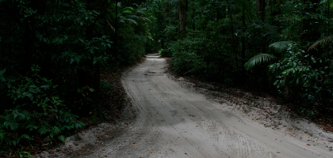

Refleksioner på halvvejen

Statusrapport 2
torsdag den 17. januar 2008

Som jeg tidligere har skrevet, var det min plan at gøre status ved hvert månedskift, men der kom til at gå lidt længere tid, så nu er vi altså halvvejs gennem vores store rejse, og det er tid til at samle op på de erfaringer, vi har samlet op indtil nu.
Lige nu sidder jeg i vores luksuscamper og er trådløst på nettet- ret sejt egentlig, når man befinder sig i en lille flække på Sydøen af New Zealand. Vi har haft stor fornøjelse af at vedligeholde vores website, bl.a. pga af alle de søde og sjove mails og kommentarer vi har fået. Men værdien begynder også at vise sig nu, hvor vi har mere end 3.000 arkiverede fotos (efter at vi har slettet de dårligste) og mange timers video. Oplevelserne har simpelthen været så mange, at det er svært at holde styr på dem, hvis ikke man løbende tager notater og sætter billeder og oplevelser i system. Dagbogen bliver rigtig sjov at have, når vi kommer hjem, og vi arbejder med ideen om at samle vores notater i en bog, i et ganske lille oplag via websitet Lulu.com, hvor man kan publicere sin egen bog i et oplag på 10 eksemplarer hvis man vil.
Vi har virkelig prøvet lidt af hvert indtil nu, og vi kan se, at vi trives bedst med foranding, selvom det selvfølgelig også stresser med alle de omstillinger. Selv den vildeste luksus bliver til hverdag, og det er rigtig sjovt at veksle mellem mange forskellige indkvarterings- og transportformer samt oplevelser.
Man finder også ud af, hvad man bedst kan lide på denne måde, og der er ingen tvivl om, at Camilla og jeg trives bedst ved vandet og med noget horisont. Det er ikke afgørende om det er varmt eller koldt, om det regner eller blæser, men vi elsker vandet, både at være ved det, på det, i det og under det.
Vi har set en del storbyer, og selvom det jo er fint med noget liv, så egner vores tur form med små børn sig nu engang bedst til naturoplevelser, så det vil vi også opprioritere en anden gang.
Vi har haft en del skuffelser med vores rejsearrangør, som igen og igen har klodset i det, lavet fejlbookinger, glemt ting, og ikke givet os det, vi har bedt om. Det er lige nu svært at se den merværdi, de tilfører i forhold til selv at booke og arrangere, hvis man altså synes at den del er sjov, men mere om det på et senere tidspunkt.
Det kan ikke undgås at man går hinanden lidt på nerverne på så lang en tur, der skal tages mange beslutninger, der er mange småstressende situationer, trætte børn etc. Jeg synes at vi indtil nu har klaret det rigtig godt, men det er en ting, som man virkelig bør tale ordentlig igennem inden man tager afsted, så man er godt forberedt.
Jeg har ikke så meget nyt at tilføje mht. teknikdelen. Det skule lige være at det ville være fedt med et stødsikkert vandtæt letbetjent kamera til Viola, for hun er blevet ret vild med at tage billeder. Og så savner jeg en ordentlig telelinse til spejlreflekskameraet, det ville have givet prikken over i´et i mange fotosituationer.
Nu er vi startet på en hel ny etape af vores tur: 2 måneder i Camper rundt på New Zealand. Det bliver igen noget andet end vi hidtil har oplevet. Det kræver omstilling, men det skal helt sikkert nok blive spændende. Mere om det i næste statusrapport.
/Tim
Vi er nu halvvejs. Vi ved ikke hvad resten af turen vil bringe. Men vi føler os ret godt rustet nu, til at fortsætte.
Billedet er fra Fraser Island - verdens største sandø, og en fantastisk naturoplevelse.